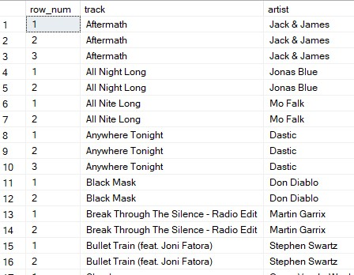
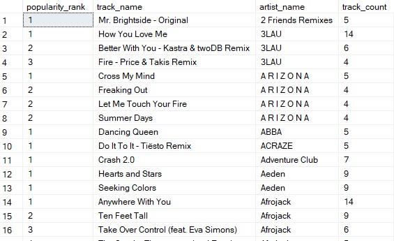
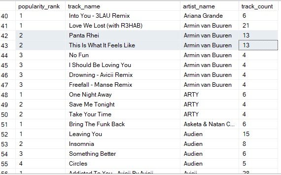

RANKING FUNCTIONS
Within every organization, there is a need to measure attributes between various groups or departments. This allows organizations to create more detailed Key Performance Indicators (KPIs) and allow managers to measure the performance of their employees. Before we start learning about these functions, let's take a look at the general syntax below:
[window function name]() OVER(PARTITION BY [column name] ORDER BY [column name]) [new column name]
ROW_NUMBER
The purpose of the ROW_NUMBER function is to specify the index number of each row within a partition. In the example below, we will illustrate how this function can be used in conjunction with CTEs:
Example
Output
-- Get all rows from table
WITH all_tracks AS (
SELECT * FROM tracks),
-- find the songs that occur more than once
track_num AS (
SELECT track, artist
FROM tracks
GROUP BY track, artist
HAVING COUNT(*) > 1),
-- assign row numbers
row_nums AS (
SELECT ROW_NUMBER()
OVER(PARTITION BY track ORDER BY track, artist) row_num,
track, artist
FROM all_tracks
-- join tables together
SELECT row_nums.* FROM row_nums
JOIN track_num ON row_nums.track = track_num.track
ORDER BY row_nums.track, row_nums.artist, row_num;

RANK
As you might assume, this function is used to rank items within a specified group. This is commonly used to identify the best-selling products, most-productive employees, and highest gross profit. The one difference between this function and the ROW_NUMBER function is that the ORDER BY clause is REQUIRED.
Example
Output
SELECT RANK() OVER(PARTITION BY artist_name
ORDER BY track_count DESC) popularity_rank, track_name
artist_name, track_count
FROM song_popularity
WHERE track_count > 3;

DENSE_RANK
The main issue with the RANK function is that it skips ranks when there are duplicate values. This can make it difficult to interpret the results. To help with this, the DENSE_RANK function continues the rank rather than skips. This is usually used in place of the RANK function. In the example below, the highlighted rows show a great example of continuing the rank. If the RANK function was used the next row after the second highlighted row would be Ranked 4th.
Example
Output
SELECT DENSE_RANK()
OVER(PARTITION BY artist_name
ORDER BY track_count DESC) popularity_rank, track_name
artist_name, track_count
FROM song_popularity
WHERE track_count > 3;
